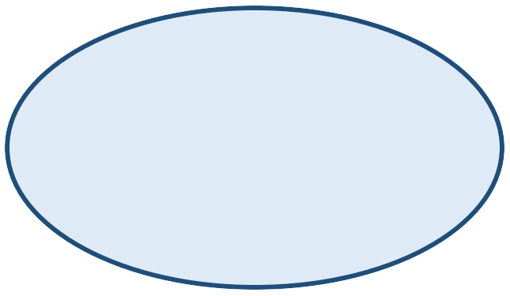
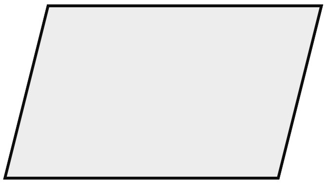
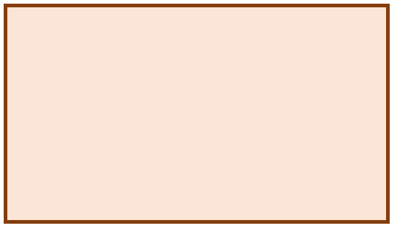
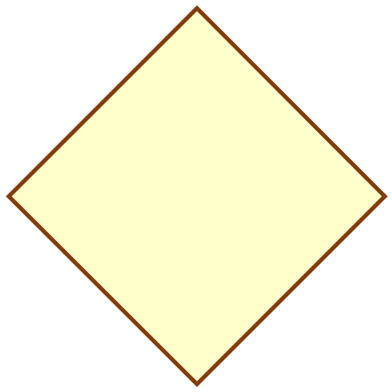
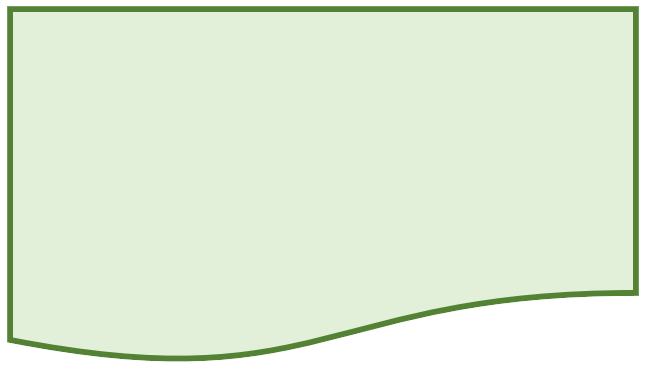
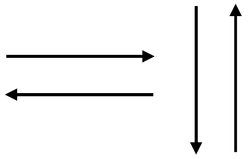

“Algoritma” sözcüğü, bilim insanı El-Harizmi’nin isminin okunuşundan ortaya çıkmıştır. Algoritma ve algoritma ifade yöntemleri bilgisayar biliminde kodlama ve programlama ile de ilişkilidir.
Doğal dil
Adımlar günlük ve anlaşılır cümlelerle anlatılır.
Sözde kod
“Başla, gir, hesapla, yazdır, bitir” gibi düzenli komutlarla ifade edilir.
Akış şeması
Adımlar geometrik şekiller ve oklarla gösterilir.
700 gramlık bir ürün 35 TL ise aynı birim fiyatla 1 kilogramın fiyatı bulunabilir. 1 kg = 1 000 g olduğundan:
0,05 TL × 1 000
50 TL
Akış şeması, bir algoritmanın adımlarını standart geometrik şekillerle gösterir. Şeklin biçimi, o adımda ne yapıldığını anlatır; oklar ise adımların hangi sırayla izleneceğini gösterir.

Elips
Başlangıç ve bitiş noktalarını belirtir. Akış şeması BAŞLA ile başlar, BİTİR ile sona erer.

Paralelkenar
Veri girişi için kullanılır. Örneğin kullanıcıdan bir sayı ya da ürünün fiyatı istenir.

Dikdörtgen
İşlem yapmayı gösterir. Toplama, çıkarma, çarpma veya bölme gibi işlemler bu şeklin içine yazılır.

Eşkenar dörtgen
Karar verme adımını gösterir. İçine genellikle “Kalan 0 mı?” gibi yanıtı Evet veya Hayır olan bir soru yazılır.

Dalgalı dörtgen
Çıktı üretmeyi gösterir. Örneğin hesaplanan sonucu ekrana yazdırma veya kullanıcıya bir mesaj gösterme adımıdır.

Oklar
Adımlar arasındaki yönü ve sırayı gösterir. Okun ucunun hangi şekle yöneldiğine dikkat edilir.
20 ÷ 4 işlemini, 20’den her seferinde 4 çıkararak yapabiliriz. Kalan 0 olduğunda kaç kez çıkarma yaptığımız, bölümün değerini verir. Akış şemasında işlem adımları dikdörtgenle, “Kalan 0 mı?” sorusu ise eşkenar dörtgenle gösterilir.
Bir dikdörtgenin alanını bulma durumunu adım adım ifade edelim:
Dikdörtgenin kısa kenarını gir.
Dikdörtgenin uzun kenarını gir.
Kısa kenar ile uzun kenarı çarp.
Alanı yazdır.
BİTİR
Sözde kod, gerçek bir programlama dili değildir; algoritmanın adımlarını düzenli ve okunur biçimde ifade eder.
GİR: 700 gramlık paketin fiyatı
HESAPLA: gram başına fiyat = fiyat ÷ 700
HESAPLA: 1 000 gramlık fiyat = gram başına fiyat × 1 000
YAZDIR: 1 000 gramlık fiyat
BİTİR
Paketin gramını ve fiyatını yaz. Algoritmanın adımları tablo olarak görünür.
Bölünen (en çok 120) ve böleni (en çok 20) yaz.
Algoritma
Bir problemi çözmek için izlenen sıralı ve anlaşılır adımlar bütünüdür.
Doğal dil
Adımlar günlük cümlelerle anlatılır.
Sözde kod
Başla, gir, hesapla, yazdır, bitir gibi komutlarla yazılır.
Akış şeması
Elips, paralelkenar, dikdörtgen, eşkenar dörtgen ve oklarla gösterilir.
Tekrarlı çıkarma
Bölme, bölenin tekrar tekrar çıkarılması olarak modellenir.
Tabloya dönüştürme
Her adım bir satır olur; matematiksel işlem açıkça görülür.